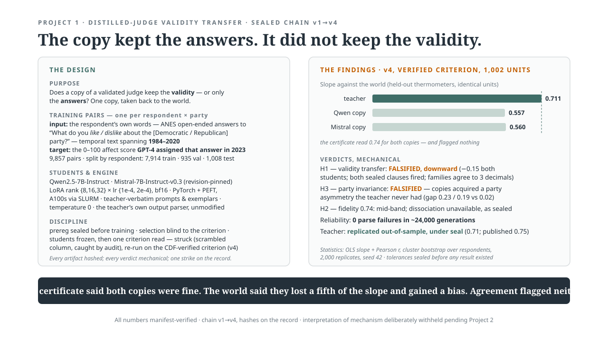
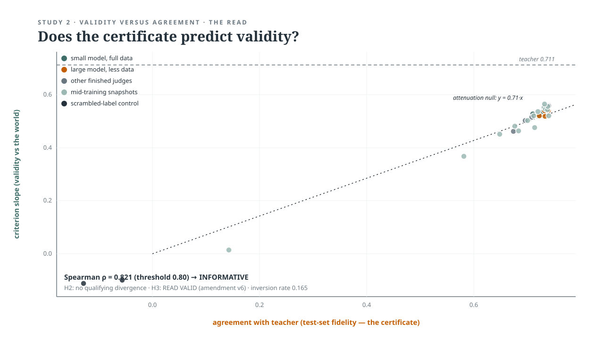

Research Agenda
I study measurement: whether the instruments social science increasingly relies on — large language models used to score political text — and now the evaluations that score models themselves, language, vision-language and increasingly vision-language-action and world models, measure what they claim to, with what reliability, and under what conditions their scores can be compared across time and settings. My dissertation develops the Measurement, Evaluation and Validation (MEV) framework, which treats constrained LLM evaluators as scientific instruments whose validity, reliability and comparability must be demonstrated, not assumed: a closed model held to a frozen codebook, checked against human annotators and against election surveys across 36 years.
Current work carries that discipline into AI evaluation across model classes, organized around three questions. Is the score valid? A follow-on study showed that a distilled judge model can keep its agreement with human raters while losing validity — agreement is not truth. Is it stable, and if not, why? I define measurands for the conditions a reported score silently depends on (noise floor, flip probability, repeatability across starts as distinct from generalizability across questions), and have located evaluation variance in configuration and version change rather than in the models: with the full configuration pinned, measurements reproduce bit-exact per item across Rutgers Amarel and NSF Delta, on NVIDIA and AMD GPUs, under an NSF ACCESS allocation. Can the claim be re-derived? A number counts only if an outside reviewer can rebuild it from a sealed record with its error budget; what can be claimed degrades, in a stated way, as access to a model closes.
The aim is a general statistical framework for evaluator uncertainty across open-weight and proprietary regimes, with reporting standards that state how much confidence an AI-generated measurement deserves. Its vehicle is an open metrology package for researchers (The glass box, in preparation) that returns any score with its error budget and makes a published result re-measurable under declared conditions. Substantive applications remain political language over time — partisan affect, ideology and legislative speech — in comparative and international contexts.
Dissertation
Measuring Political Concepts Over Time with Constrained Large Language Models
Ph.D., Political Science (Political Methodology), Rutgers University — conferred May 17, 2026
Committee: Beth Leech (chair) · Junyi Jessy Li (Linguistics, UT Austin) · Richard Lau (political psychology) · Jan Kubik (interpretive methods)
Designed the Measurement, Evaluation & Validation (MEV) framework — each of the three established separately — for measuring affect and economic ideology across 36 years of text, where drift in language and meaning is a background condition rather than an anomaly to detect.
Qualified a closed API model as a measuring instrument with no weights and no logits. Control was exercised entirely at the interface — fixed output space, temperature 0, era-grounded exemplars, ICL/CoT scaffolding restricting admissible outputs — and everything else assessed a posteriori, from outputs alone. Contested concepts became scorable measures by building drift into the construct instead of correcting for it downstream: 24 topic frame labels, ordered inference logic, and calibration rules precise enough that an independent annotator working from the written guidelines alone reproduces the assignments.
Two validated time-series datasets came out of it — 10,759 scored respondent-party observations from 6,336 respondents for partisan affect, and a frame-grounded economic ideology series — each checked against its own exogenous ANES benchmark, 1984–2020. Rater agreement was established before aggregation (Cohen's κ 0.64–0.81 across annotator and model pairings; Fleiss' κ 0.71–0.78 across three raters, with GPT-4 executing the same constrained procedure as the human annotators). Code, released measures, and codebook →
Extending the dissertation — the instrument turned on the measurers
The dissertation qualified one instrument from outside it — a closed model held to a fixed output space, temperature 0 and era-grounded exemplars, validated by hand against ANES feeling thermometers across 36 years. No weights, no logits, no access to the computation: the evidence has to come from a criterion the model never saw. These projects carry that instrument into new questions, and turn it on the judges that evaluation now runs on.
Distilled-Judge Validity Transfer Completed · 2026 Does validity survive? Do the cheap judge copies used in production keep the validity of the judge they copy?
The first preregistered test of the question. The human-validated GPT-4 instrument — 9,857 respondent×party units of real like/dislike text, 1984–2020, hash-split 7,914 / 935 / 1,008 — was extended into two revision-pinned 7B open-weight copies, and the dissertation's validation replicated out-of-sample at 0.71 against a published 0.75. Model selection was sealed on agreement alone, so the thermometer never touched training.
H1, validity transfer: falsified downward, −0.15 in both copies, both sealed clauses fired. H3, party invariance: falsified.

The sweep. Twelve runs — two 7B copies × three LoRA ranks × two learning rates, all on the full training set (7,914 units, bf16). Selection was sealed before the read, made on validation fidelity alone with the criterion untouched.
| Copy · learning rate | rank 8 | rank 16 | rank 32 |
|---|---|---|---|
| Copy A (7B) · 1e-4 | ran | ran | ran |
| Copy A (7B) · 2e-4 | ran | ran | selected — val r 0.7685 |
| Copy B (7B) · 1e-4 | ran | ran | ran |
| Copy B (7B) · 2e-4 | selected — val r 0.7692 | ran | ran |
Every cell in the sweep landed within nine thousandths of every other — validation band r = 0.760–0.769 across all twelve, zero parse failures. That forecloses the obvious objection: the copies were as good as this recipe gets, and still lost the criterion; the loss is in the copying, not the recipe. Against the teacher's slope of 0.711 (r 0.696), the two selected finals read 0.557 (r 0.540) and 0.560 (r 0.546) — while their test fidelity, 0.741 and 0.742, flagged nothing.
- DataANES open-ended like/dislike responses, 1984–2020; 9,857 respondent×party units, hash-split 7,914 / 935 / 1,008; feeling thermometer as held-out criterion
- DesignHash-chained preregistration; held-out feeling-thermometer criterion; two open-weight copies of a human-validated teacher
- Codejudge-validity-audit — preregistration chains, decision logs, results, and figures for both studies
Validity versus agreement Completed · 2026 Does the acceptance score predict validity at all?
A 29-adapter ladder built along two roads to the same agreement: a small model shown everything (capacity-limited) and a large model shown a 10% dose (exposure-limited), with nested doses by respondent, mid-training checkpoints, rank variation, and a scrambled-label control, under a sealed budget of 30. If validity differs where agreement is equal, the acceptance score is not a sufficient statistic.
Training was run by hand, run by run, under experimenter control, every intervention dated in an append-only decision log — the log replaces the grid. Hands-on stayed left of the glass: no run, checkpoint, or decision ever saw a criterion value. When the ladder was declared closed, every adapter was SHA-256 hashed and frozen, and the whole ladder met the CDF-verified criterion in one sealed pass.

Agreement vouches for the copy, not the judge. It says how much of the teacher survived transmission, and nothing about whether the teacher was right. Validation has to touch the world at least once; after that single anchoring, the dilution arithmetic carries agreement the rest of the way.
The gate fired. The v4 pooled control gate failed and was adjudicated through hash-chained amendments — v5, a within-party gate, also failed; v6 established an empirical shuffle-null over eight fresh scrambled-label controls. The eight-seed band came out at [−0.181, +0.065], the original control at −0.097 sat inside it — a typical nonsense judge, so the apparatus had never been broken — and every finished adapter cleared that ceiling by 2.59× or more. H3: read valid. The full trail, including a clause-reading ambiguity disclosed before the ruling that resolved it, is in the decision log.
- DataThe same 9,857 ANES units and feeling-thermometer criterion; 29 adapters plus eight scrambled-label controls
- ExtendsDistilled-Judge Validity Transfer, under the same preregistration lineage
- ApparatusRun-by-run experimenter control; append-only training log; air-gapped criterion; a single blind read
Text-to-Measurement Instrument In progress · 2026 Can it qualify itself? Can qualification be reproduced for each new construct, rather than rebuilt by hand?
A text-to-measurement instrument automating the dissertation's measure–evaluate–validate protocol — fixed output space, temperature 0, era-grounded exemplars, blinded outside gold — so that qualification is reproduced for each new construct, corpus or period rather than rebuilt by hand, every run ending in a falsifiable verdict: validated, refinable or misspecified.
The verdict logic is verified on a mock fixture — a clean run returns validated; drift injected on purpose returns refinable. Real-data validation is in progress.
- DataA mock fixture for the verdict logic; real-data validation in progress
From Survey Text to Floor Speech In progress · 2026 Can it travel? Does a method validated on survey text hold in another register?
The method validated on ANES open-ended text carried to partisan affect in economic-policy floor speech, 2013–2020: GovTrack percentiles as the outside gold, every speech scored blind, a panel of 65 members and 5,535 speeches split by member into grounding and validation.
On the earlier grounding sample, register-level grounding had raised r from +0.084 to +0.241; its role-level successor showed no gain on the panel, and the register prompt itself has not been run there. No preregistration was sealed; the falsification condition set in the decision log — correlation indistinguishable from zero after grounding — is not met.
- DataCongressional Record floor speech under nine economic subject headings, 2013–2020; GovTrack percentiles as criterion; cluster bootstrap by member, 2,000 replicates
Partisan Affect Before the Feeling Thermometer In progress · 2026 What can be measured in the decades before the criterion existed? Awaiting data from ANES.
The feeling thermometer — the criterion the dissertation validated against — begins in 1978; the ANES open-ended like/dislike questions run back to 1952. This project extends the affect measure toward 1952, where the evidentiary situation changes as it goes back: verbatim response text is published from 1984 onward, while 1952–1980 survives as coded mentions rather than the words themselves. What an instrument qualified on verbatim text can legitimately claim over coded mentions is the methodological question the project turns on. The source archive is secured and the pipeline re-established.
- DataANES open-ended like/dislike responses, 1952 onward — permanently private archive; contains ANES respondent data
AI Behavior Metrology Console — can an outsider re-derive this score?
Guest Scholar, Rutgers University, August 2026 –. Co-inventor, entrepreneurial lead and co-technical lead. Rutgers invention disclosure T2027-048; provisional patent, 2026. The console is supported by a merit-reviewed NSF ACCESS allocation — An Error Budget for AI Model Evaluation: an Open-Weight Reliability Harness (SOC260076; 750,000 credits on Delta and DeltaAI at NCSA) — and a National Research Platform allocation. The claim it makes — that an observed difference belongs to the model rather than to the serving stack — holds only if the same measurement is repeated across models, precision formats, kernels, and hardware. The size of that design is what makes it compute-bound, and the allocations are what let the sweep run at the scale the claim requires.
A measurement console that takes a model as its publisher ships it and declares its score with its uncertainty, under conditions it states, on a record an outside reviewer can rebuild. The score alone is not the product; the declaration is: a value, its error budget, the conditions, and how it was obtained.
The console — what it measures and how it asks In progress · 2026 What does a reported score silently depend on, and can each dependence be given a symbol and a number?
What it measures. A noise floor ε, a per-item flip probability φ, the largest batch size at which inference stays bit-exact D*, a sampler term T*, a serving-stack term σstack, and judge agreement ρ; two uncertainties kept apart — repeatability across starts and generalizability across questions, the latter by a bootstrap of 10,000 draws over the run's own items, no projected figures.
How it asks. Three tests and an interaction run: a deterministic floor (sampling off), wander (sampling on), the score as served against the published figure; then pairs of settings turned together under a rule fixed before the run, read question by question, gains never netted against losses, declared only when seen on two suites of the same kind. Run design: 35 starts per line, two values per dial, baselines at a multiple.
What it keeps. Every setting in a ledger with its provenance — the owner's files, the test's makers, the serving program, or the platform filling a silence, named as such; nothing runs while a condition is unsourced. Sealed SHA-256 receipts, hash-chained manifests, append-only rulings; every declared figure mapped to a NIST AI RMF or EU AI Act reference in the report itself; an offline script recomputes every number.
Two consoles. Green measures the model as its publisher ships it; blue takes a vendor's or a paper's reported result and re-measures it under declared conditions, so a published claim becomes a measurement that can be re-taken. Scope: language models, vision-language models, and an application built on a VLM by chained declaration.
- BuiltFrom a versioned build document that works like a construction contract — every element with its purpose, every rule with its root cause, measurement definitions kept immutable and apart from software requirements — by AI coding agents under that document. 900-plus hash-verified runs, 60-plus ruled decisions, 10 sealed amendments; 1,200-plus sampled runs in a month on the earlier console.
- Runs onRutgers Amarel, NSF ACCESS Delta and DeltaAI at NCSA, and the National Research Platform, over Slurm with Transformers and vLLM — compute independent of any model vendor
- PackageThe engine without the interface is the open Python package of The glass box (in preparation)
White box — the measuring half In progress · 2026 Does the result hold still?
This answers the question every eval team asks under time pressure: is it the model or the infrastructure? Across a swept grid — precision, batch size and composition, attention kernel, threading, 1–4-GPU tensor parallelism — precision dominates every infrastructure variable by 103–104. That yields a regression threshold: a delta below it is the serving stack, not the model, and no further investigation is warranted.
The precision knob is priced in the unit that actually gets reported — the declared score. Across a bf16/fp16 MMLU/LAMBADA grid every cell repeats exactly (spread 0.0 over five cold starts), while dtype alone moves declared MMLU accuracy by up to four points in either direction (0.230→0.270; 0.595→0.560): a delta the size of an advertised model upgrade, produced by numeric format, and invisible to any QA built on repetition.
Two further results. fp16 silently destroyed 99.5% of a 7B open-weight model's token probabilities — exponent-range overflow, diagnosed from per-token evidence — while sparing an equal-sized model, perfectly reproducibly and therefore undetectable by rerun. And the aggregate is not hiding the items: decision-margin structure quantified beneath each declared score (50k generation steps, median top-2 margin 1.4, none within 10-4 of flipping), which also bounds how much evaluation is needed to separate models.
Glass box — the proving half In progress · 2026 What can an outsider check?
Every hypothesis is sealed under a named falsification condition before its runs, SHA-256 hash-chained across eight successive preregistrations. Six predictions fell, and the falsifications are published as the findings — nothing reinterpreted after data.
Provenance is read from the machine, not from documentation. Every run emits a self-hashing manifest whose condition vector — dtype, kernels, TF32, determinism flags, silicon — is read back from live system state, with per-token evidence in verifiable sidecars (108/108 verify); alongside an append-only log of PI rulings D1–D20 and a full table of reported figures with their conditions. Open source (MIT), CI-verified, pytest, golden datasets under CI regression — another researcher can rerun the comparison and get the same numbers.
- EvidenceSeals, receipts, and decision logs — private during IP review; request access
Compass — can a configuration decision be filed as evidence?
Co-inventor and co-technical lead. Rutgers invention disclosure T2027-051; provisional patent, 2026. Every team that deploys a model departs from the configuration it was tested under; at present the only way to learn the cost is to re-run the evaluation afterward.
Compass — evidence-bounded tuning guidance In progress · 2026 Set the dials to X: what changes, with what uncertainty? Reach target Y: which settings?
What it is. Evidence-bounded guidance for tuning a deployed model: it predicts how behavior changes under a new configuration — precision, quantization, GPU, sampling — and recommends settings that reach a stated target, using only the console's verified measurements.
How it answers. A response surface over the console's measured cells and the bounded moves between them, nothing fitted; forward prediction (set the dials to X: what changes, at the question level, with uncertainty) and inverse guidance (reach target Y: which settings), each answer carrying the identifiers of the measurements it rests on and regenerable with one command.
Where it refuses. A gate of five ordered checks runs before any answer; outside the measured region it declines, names the missing measurements, and records the refusal as an output. Precision is treated as a category, not a scale: no route interpolates across a precision boundary. The whole decision is a pure function of the evidence and the question, so it reproduces exactly.
- ExistsThe program's 474 hash-verified runs are the first evidence set; the refusal gate and receipts are specified and under construction; the response surface, inverse guidance and item-level prediction are contemplated